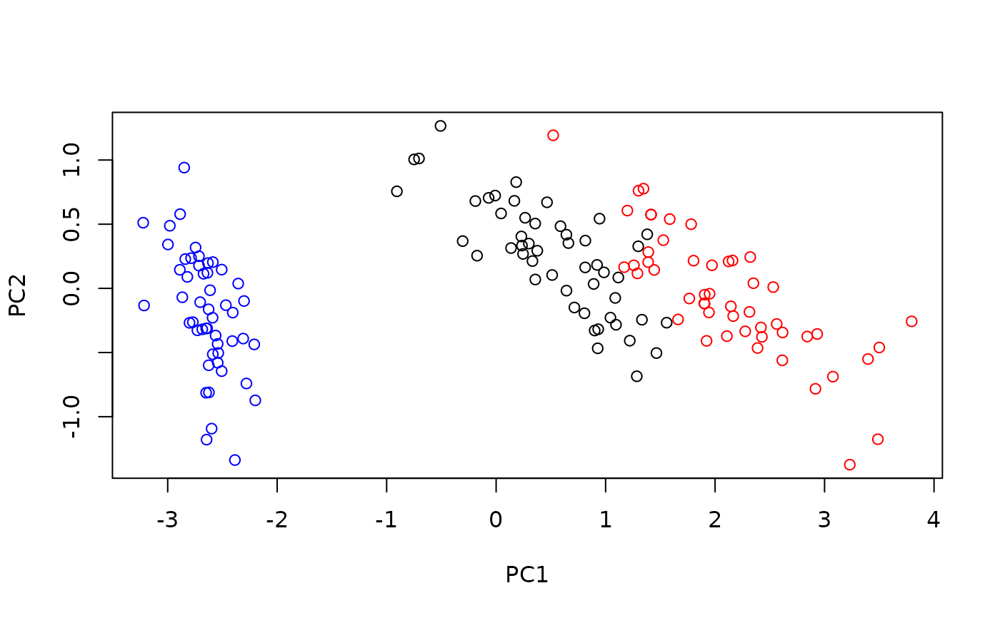
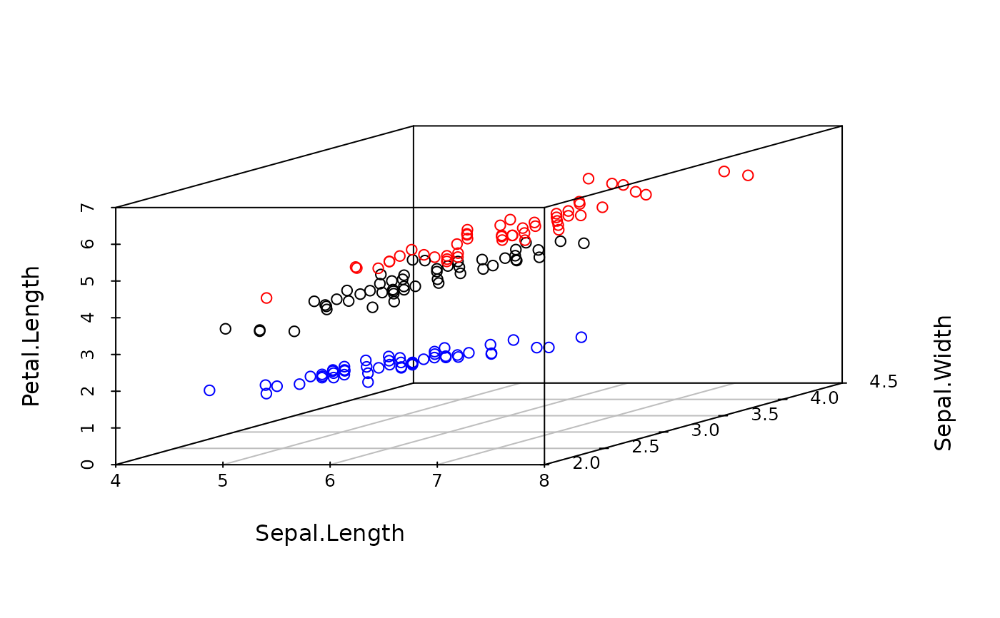

S4 Class implementing PCA.
Details
PCA transforms the data in orthogonal components so that the first axis accounts for the larges variance in the data, all the following axes account for the highest variance under the constraint that they are orthogonal to the preceding axes. PCA is sensitive to the scaling of the variables. PCA is by far the fastest and simples method of dimensionality reduction and should probably always be applied as a baseline if other methods are tested.
Slots
funA function that does the embedding and returns a dimRedResult object.
stdparsThe standard parameters for the function.
General usage
Dimensionality reduction methods are S4 Classes that either be used
directly, in which case they have to be initialized and a full
list with parameters has to be handed to the @fun()
slot, or the method name be passed to the embed function and
parameters can be given to the ..., in which case
missing parameters will be replaced by the ones in the
@stdpars.
Parameters
PCA can take the following parameters:
- ndim
The number of output dimensions.
- center
logical, should the data be centered, defaults to
TRUE.- scale.
logical, should the data be scaled, defaults to
FALSE.
Implementation
Wraps around prcomp. Because PCA can be reduced to a
simple rotation, forward and backward projection functions are
supplied.
References
Pearson, K., 1901. On lines and planes of closest fit to systems of points in space. Philosophical Magazine 2, 559-572.
See also
Other dimensionality reduction methods:
AutoEncoder-class,
DRR-class,
DiffusionMaps-class,
DrL-class,
FastICA-class,
FruchtermanReingold-class,
HLLE-class,
Isomap-class,
KamadaKawai-class,
MDS-class,
NNMF-class,
PCA_L1-class,
UMAP-class,
dimRedMethod-class,
dimRedMethodList(),
kPCA-class,
nMDS-class,
tSNE-class
Examples
dat <- loadDataSet("Iris")
emb <- embed(dat, "PCA")
plot(emb, type = "2vars")

if(requireNamespace("scatterplot3d", quietly = TRUE))
plot(inverse(emb, getDimRedData(emb)), type = "3vars")
